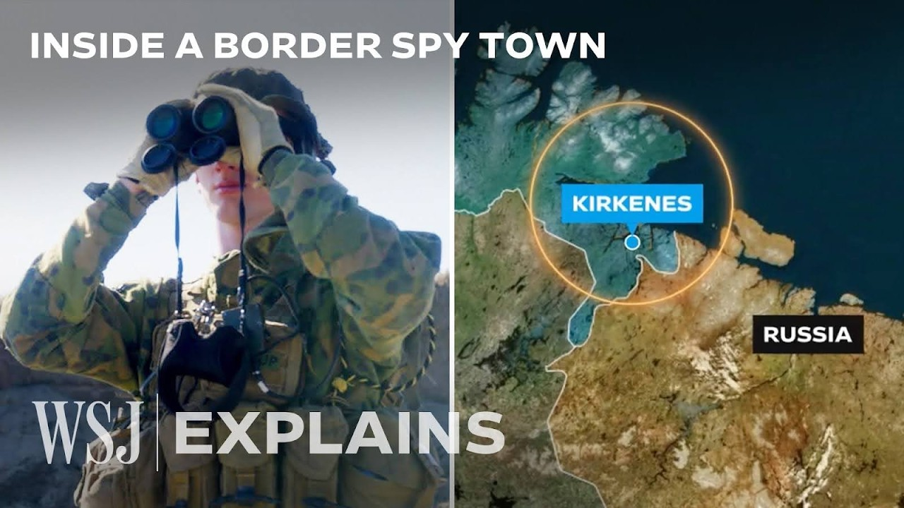

【华尔街日报 20250712 在挪威“间谍小镇”追捕俄罗斯间谍】
Summary: Norwegian intelligence hunts Russian spies in a border town near Russia, where suspicion runs high and covert operations are rampant.
摘要： 挪威情报机构在靠近俄罗斯的边境小镇追捕间谍，当地对俄罗斯的关联高度怀疑，隐蔽行动频发。

⏱️ Estimated Reading Time: 16 min
📚 四级生词 📚 六级生词 📚 雅思生词 📚 托福生词 📚 专八生词 📚 SAT生词 📚 考研生词 📚 GRE生词 📚 高考生词 📚 其它生词生词
We're on the hunt for Russian spies with Norway's domestic intelligence agency, the PST.
我们正与挪威国内情报机构PST一起追捕俄罗斯间谍。
Regional chief Johan Roltsness is operating in a town right on the border with Russia.
地区负责人Johan Roltsness正在一个紧邻俄罗斯边境的小镇展开行动。
Both its ties to Moscow and proximity to key NATO bases have made it a focal point for covert operations.
它与莫斯科的联系以及靠近北约关键基地的位置使其成为隐蔽行动的焦点。
It's very rare to get this kind of access, particularly in such close proximity to Russia.
这种访问机会非常罕见，尤其是在如此靠近俄罗斯的地方。
For this community, everything with a link to Russia is treated with suspicion.
在这个社区，任何与俄罗斯有关联的事物都会受到怀疑。
They call this spietome, they're following me.
他们称这种情况为“间谍小镇”，他们在跟踪我。
Everything what I do.
我的一举一动都被监视。
When you get that kind of off-feeling, that's somebody doing this on purpose.
当你感到不对劲时，那就是有人在故意为之。
This is not natural.
这不正常。
It's just weird, I swear we've seen this kind of numerous occasions before.
这很奇怪，我发誓我们之前多次见过这种情况。
It makes you paranoid.
这会让你变得多疑。
That's the whole thing about this place.
这就是这个地方的特点。
You kind of imagine that you see things sometimes.
你有时会想象自己看到了什么。
You can't help but think that there's something weird going on.
你忍不住会觉得有什么奇怪的事情正在发生。
Johaness is located at the eastern tip of Norway.
Johaness位于挪威的最东端。
Beyond this fence here is Russian territory.
这道围栏之外就是俄罗斯领土。
The red and green post marks where Russian land begins.
红绿相间的柱子标志着俄罗斯领土的起点。
The black and yellow symbolizes Norway.
黑黄相间的部分象征挪威。
Its proximity to Russia has made it a key target in operations to surveil NATO.
靠近俄罗斯使其成为监视北约行动的关键目标。
Last year, Russian sits and drove for 14 hours to take photos of some military infrastructure and he was fined and banned from Norway for five years.
去年，一名俄罗斯人坐了14小时车拍摄军事设施，被罚款并禁止入境挪威五年。
Elsewhere in the high north, Russians have embedded themselves deep in Norwegian society.
在北部其他地区，俄罗斯人已深入挪威社会。
Mikhail Mikushin claimed to be a Brazilian researcher named Jose Afi Shemaria.
Mikhail Mikushin曾自称是巴西研究员Jose Afi Shemaria。
But while focusing on Arctic security at a university in Tromsor, he was actually a deep cover Russian spy.
但在特罗姆瑟大学研究北极安全时，他实际上是俄罗斯的深度潜伏间谍。
This video shows the moment of his arrest in 2022.
这段视频展示了他在2022年被捕的瞬间。
It seems so old school Soviet.
这看起来非常像苏联时期的做法。
It takes a huge amount of resources to use and illegal in that way.
这种方式需要大量资源，而且是违法的。
Mikushin was exchanged in a prison swap in 2024 and was greeted personally by Russian President Vladimir Putin upon his return.
Mikushin在2024年的一次囚犯交换中被释放，回国时受到俄罗斯总统普京的亲自接见。
In addition to cases of deep cover espionage, hybrid tactics such as sabotage, cyber warfare and arson are ramping up all across Europe.
除了深度潜伏间谍案，破坏、网络战和纵火等混合战术也在欧洲各地升级。
Authorities suspect Russia and its allies are behind these attacks.
当局怀疑俄罗斯及其盟友是这些袭击的幕后黑手。
Norway's high north is particularly vulnerable to threats.
挪威北部尤其容易受到威胁。
Access to the barren sea provides strategic military positions in the Arctic and opens up a channel for Russia to reach the Atlantic.
进入巴伦支海为俄罗斯提供了北极的战略军事位置，并开辟了通往大西洋的通道。
The waters are also a prime location for the fishing industry.
这片水域也是渔业的重要区域。
But Norway says Russia is utilizing its fleet of civilian trawlers to conduct covert maritime intelligence operations.
但挪威表示，俄罗斯正在利用其民用拖网渔船舰队进行隐蔽的海上情报行动。
We have a general assessment about all civilian Russian vessels posing an intelligence threat to Norway.
我们普遍认为所有俄罗斯民用船只都对挪威构成情报威胁。
It can be a way to transport in somebody that wants to conduct a sabotage operation, Russian intelligence, what their best at, that is using all forms of legitimate causes to exploit that in intelligence gathering.
这可能是运输破坏分子的方式，俄罗斯情报机构最擅长的就是利用一切合法手段进行情报收集。
This is some of the part facilities.
这是一些港口设施。
This is a deep water dock for bigger vessels.
这是一个供大型船只停靠的深水码头。
And we have a Russian vessel over there.
那边有一艘俄罗斯船只。
The port is only one of three in Norway.
这个港口是挪威仅有的三个之一。
The Russian vessels are allowed to dock out.
俄罗斯船只被允许在此停靠。
And the problem for the PST, the concern is that many of these vessels might be coming in to do espionage activities to gather intelligence for the Russian state.
PST担心的是，许多这些船只可能是来进行间谍活动，为俄罗斯收集情报。
And that is why they come here on a regular basis.
这就是他们定期来这里的原因。
They inspect the vessels and they're always studying the identities of the Russian crew that come in to dock at this port.
他们检查船只，并始终研究停靠该港口的俄罗斯船员身份。
Although this vessel doesn't appear to be suspicious from the outside, your hand can't rule out that those on board have links to Russia's domestic security agency, the FSB, or its military intelligence agency, the GRU.
尽管这艘船从外表看并不可疑，但不能排除船上人员与俄罗斯国内安全机构FSB或军事情报机构GRU有联系。
That's the kind of nefarious part of this, right?
这就是其中的阴暗面，对吧？
You found the Russian outcasts.
你发现了俄罗斯的弃儿。
No, no.
不，不。
Most of them are sailors.
他们大多数是水手。
Most of them are simply doing their job here to make money and bring it back to their families.
大多数人只是在这里工作赚钱，养家糊口。
The problem is that you never know, right?
问题是你永远不知道，对吧？
No, you never know.
是的，你永远不知道。
And that's part of the uncertainty.
这就是不确定性的一部分。
The police help to investigate the identities of those on board.
警方协助调查船上人员的身份。
They are not like we used to say the normal Russian seamen who was used to be a little bit older.
他们不像我们过去所说的普通俄罗斯海员，那些人通常年纪稍大。
This guy looks to be in very good condition, well-trained, and more focused when we are on board.
这家伙看起来状态很好，训练有素，我们在船上时他更加专注。
More interesting in what we are doing and the questions we are asking.
对我们所做的事情和我们提出的问题更感兴趣。
The shift came after 2022, when Russia updated its naval doctrine to allow civilian vessels and crews to be used by the armed forces in wartime.
这一变化发生在2022年后，当时俄罗斯更新了海军学说，允许战时使用民用船只和船员。
Most vessels travel here from Murmansk, the home of Russia's northern fleet and where many of its highly strategic nuclear weapons are located.
大多数船只从摩尔曼斯克驶来，那里是俄罗斯北方舰队的基地，也是许多高度战略性核武器的所在地。
To understand more about how Russian agencies work in Kirikinets, we're going to meet resident Broderber.
为了更了解俄罗斯机构在Kirikinets的活动，我们将拜访居民Broderber。
He's a former boarded-ard who was previously convicted of espionage in Russia and is now convinced he's under surveillance.
他是一名前边防人员，曾在俄罗斯因间谍罪被判刑，现在确信自己受到监视。
I know they are following me because it's a Russian officer in FSB has told a man that they are very disappointed on me.
我知道他们在跟踪我，因为一名FSB俄罗斯军官告诉一个人，他们对我非常失望。
I see some Russian men on your age.
我看到一些和你同龄的俄罗斯人。
Going in the evening take photos of different places in Kirikinets.
晚上去Kirikinets的不同地方拍照。
They are everywhere.
他们无处不在。
During the 1990s, he befriended his Russian counterparts.
在1990年代，他与俄罗斯同行建立了友谊。
They drank vodka together, skewed, and even swapped uniformed and weapons.
他们一起喝伏特加，滑雪，甚至交换制服和武器。
It had a bad time in Russia in 1990s.
1990年代俄罗斯处境艰难。
We need to help them many times, put some equipment, but we get very close, friendly cooperation.
我们多次帮助他们，提供一些设备，但我们建立了非常紧密的友好合作。
Broder's closest Russian colleague, Anatoliy Bosnik, later turned out to be working for the FSB.
Broder最亲密的俄罗斯同事Anatoliy Bosnik后来被发现为FSB工作。
At the same time as developing this friendship, Broder agreed to complete jobs for Norway's military intelligence.
在建立这段友谊的同时，Broder同意为挪威军事情报机构完成任务。
He dispatched money and memory cards in envelopes across Russia.
他在俄罗斯各地通过信封递送资金和存储卡。
In 2017, he was arrested by Russian authorities on charges of espionage.
2017年，他因间谍罪被俄罗斯当局逮捕。
He has been told me they have always, early in 2016, get the order to catch me someplace.
他告诉我，早在2016年，他们就接到命令要在某个地方抓我。
You think that Anatoliy was on your side or he was working for the Russians?
你认为Anatoliy站在你这边还是为俄罗斯工作？
Then he worked for the Russian really.
实际上他为俄罗斯工作。
He could say something to me in 2016.
他本可以在2016年告诉我一些事情。
For the don't come back.
比如“不要回来”。
He could... For the don't come to Russia.
他本可以说...“别来俄罗斯”。
They will arrest you.
他们会逮捕你。
He could do that.
他本可以这么做。
But I cannot blame him for that.
但我不能为此责怪他。
Monitoring the border of Russia today, 19-year-old conscripts.
今天监视俄罗斯边境的是19岁的应征士兵。
They say they rarely interact with their Russian counterparts.
他们说很少与俄罗斯同行互动。
We have to be prepared for everything.
我们必须为一切做好准备。
So it's pretty special that right over there, a couple hundred meters, there's a country that is at an active war in Ukraine.
所以很特别的是，就在几百米外，有一个国家正在乌克兰进行战争。
Some people think it's dangerous and it's just a reality that we have to accept.
有些人认为这很危险，但这是我们不得不接受的现实。
They monitor Russian movements, waiting to see suspicious signs from the other side.
他们监视俄罗斯的动向，等待对方出现可疑迹象。
And presumably, in those watchtowers over there, the Russians are watching us right now.
很可能，那边的瞭望塔里，俄罗斯人正在监视我们。
Both sides, of course.
当然，双方都是如此。
Up a troll in the border areas at a time of very, very high tension in this region.
在这个地区高度紧张的时期，边境地区的局势更加复杂。
The atmosphere in Kirikinesse has undergone a seismic change following the Russian annexation of Crimea in 2014 and the full scale invasion of Ukraine in 2022.
自2014年俄罗斯吞并克里米亚和2022年全面入侵乌克兰后，Kirikinesse的氛围发生了巨大变化。
Hundreds of Russian citizens live here.
数百名俄罗斯公民居住在这里。
Many gather at this Soviet war.
许多人聚集在这个苏联战争纪念碑前。
Where division over Moscow's war efforts has taken center stage.
在这里，对莫斯科战争行动的分歧成为焦点。
One resident displayed a flag of Russia's power-minitory group, Wagner.
一名居民展示了俄罗斯准军事组织瓦格纳的旗帜。
The PST says those attending events here are vulnerable to recruitment.
PST表示，参加这些活动的人容易被招募。
In general, all ties to Russia impose some risk of being pressured or doing it voluntarily in support of the case.
总的来说，所有与俄罗斯的联系都会带来被施压或自愿支持其行动的风险。
That's as sanctions on border crossings have made it harder for Russian spies to collect information themselves.
由于边境过境制裁，俄罗斯间谍更难亲自收集信息。
You see some efforts recruiting on social media or crowdsourcing.
你会看到一些通过社交媒体或众包进行的招募努力。
You can pay a random guy 20 euros to photograph a site that's happened in Poland and the Baltics.
你可以花20欧元雇一个陌生人拍摄某个地点，这在波兰和波罗的海国家发生过。
So they have adapted to the situation.
因此他们已经适应了这种情况。
Natalia is a Russian resident in Kirikinesse.
Natalia是Kirikinesse的俄罗斯居民。
She says there's been an increase in posts on Russian telegram and Facebook channels in Kirikinesse.
她说Kirikinesse的俄罗斯Telegram和Facebook频道上的帖子有所增加。
Asking residents travelling across the border to drop off parcels or letters.
要求居民在跨境时递送包裹或信件。
The most important thing is that the citizens like her regularly travel between Norway and Russia to visit family or bring back parrots.
最重要的是，像她这样的公民经常往返于挪威和俄罗斯之间，探亲或带回鹦鹉。
But since the force girl war in Ukraine, she's been careful not to draw attention on such trips.
但自乌克兰战争爆发以来，她在这些旅行中格外小心，避免引起注意。
In addition to suspicious activity online, there's also a distinct strangeness to this town out on the streets.
除了网上的可疑活动，这个小镇的街头也有一种明显的怪异感。
While filming, we had reasons to believe we were under surveillance.
拍摄期间，我们有理由相信自己被监视了。
It's just weird.
这很奇怪。
Something so strange about the way that's marked.
标记的方式非常奇怪。
Yeah, we've seen this car in numerous occasions before.
是的，我们之前多次见过这辆车。
We've been photographed while conducting interviews.
我们在采访时被拍照。
And one of our sources was tailed by an unknown man after we met with her.
我们的一名消息人士在与我们会面后被一名陌生男子跟踪。
That's the whole thing about this place.
这就是这个地方的全部。
You kind of imagine that you see things sometimes.
你有时会想象自己看到了什么。
And then everyone tells you that you need to be on guard because you might be watched.
然后每个人都会告诉你需要保持警惕，因为你可能被监视。
You can't help but think that there's something weird going on.
你忍不住会觉得有什么奇怪的事情正在发生。
We've also been trying to speak with Russian officials to get their perspective on the situation in Kirikinesse.
我们也试图与俄罗斯官员交谈，了解他们对Kirikinesse局势的看法。
We haven't received a response to our cause or emails.
我们尚未收到对我们请求或邮件的回复。
So I'm just going to walk up and see if I can knock on the door of the consulate and perhaps we can speak to them.
所以我打算走过去看看能否敲开领事馆的门，或许我们能和他们谈谈。
Hello.
你好。
Hello.
你好。
Hello.
你好。
I'm a correspondent of the World's Regional.
我是《华尔街日报》的记者。
I've written a email and called you.
我给你们发过邮件并打过电话。
I just wanted to know if you can interview the consulate.
我只是想知道能否采访领事馆。
I'm sorry, but I can't.
抱歉，我不能。
So you can write it down as if it's time.
所以你可以记录下来，就当是时候了。
For your hand in the team, combating the actors behind hybrid threats will continue to be a difficult one.
对于你们团队来说，打击混合威胁背后的行为者将继续是一项艰巨的任务。
But key focus.
但这是关键重点。
When you're in a border close area, you have to try to frame what you can do something about.
当你身处边境附近地区时，必须尝试界定自己能做些什么。
I can't do anything about geopolitics.
我对地缘政治无能为力。
I try to single out what issues I can handle.
我试图挑出自己能处理的问题。
And Russia, who knows what Russia's plan is, but I don't see kind of a positive outcome.
至于俄罗斯，谁知道俄罗斯的计划是什么，但我看不到积极的结果。